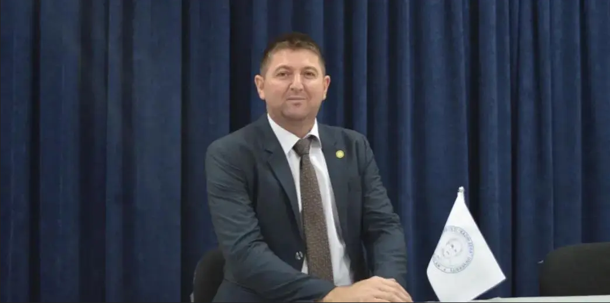

Statistical convergence
& summability
Sequence spaces, weighted methods, ideal convergence, fuzzy numbers, and Tauberian results.
Academic portfolioMathematics
Professor of Mathematics
Public University “Kadri Zeka” · Gjilan, Republic of Kosovo
Researching statistical convergence, approximation theory, and mathematical structures while teaching across computer science, statistics, education, and machine learning.
01 / Research
Core theoretical work in analysis and summability expands into approximation, geometry, computational optimisation, and mathematics education.
Sequence spaces, weighted methods, ideal convergence, fuzzy numbers, and Tauberian results.
Positive linear operators, Korovkin-type theorems, and Bernstein–Kantorovich operators.
Mathematical and algorithmic approaches including simulated annealing and ant colony methods.
Geometric transformations, harmonic points, graph theory, and algorithm visualisation.
Mathematical understanding, RME, STEM, Python modelling, MOOCs, and digital learning.
02 / Selected work
Recent and representative work across theoretical mathematics, approximation, geometry, and computational applications.
03 / Academic journey
A continuous academic progression across mathematics, computer science, institutional leadership, and interdisciplinary teaching.
04 / Teaching
05 / Formation
Academic formation at the University of Tirana, Faculty of Natural Sciences, Department of Mathematics.
06 / Collaboration
International and regional initiatives spanning sustainable technology, science education, and practical skills in engineering and ICT.
07 / Academic contribution
Academic contribution extending beyond research and teaching through mentoring, authorship, professional development, curriculum design, quality assurance, and scholarly service.
08 / Conferences
Thirty-seven supplied records document 36 distinct conference activities from 2013–2026, spanning research presentations, mathematics education, digital learning, and international participation.
09 / Bibliography
Original byline spellings are retained. Mathematical and bibliographic details follow the supplied academic record.
10 / Knowledge exchange
11 / Contact
For research collaboration, academic mentoring, conference invitations, and institutional enquiries.

Academic contact
Professor · Faculty of Computer Sciences
12 / Continue exploring